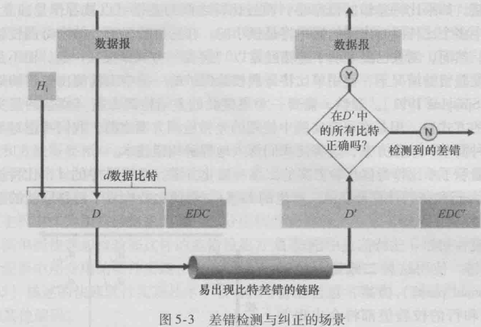
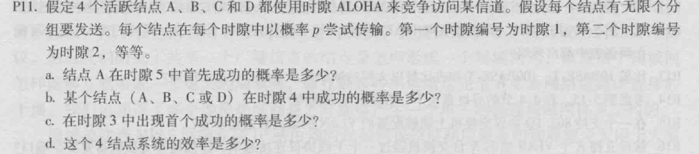
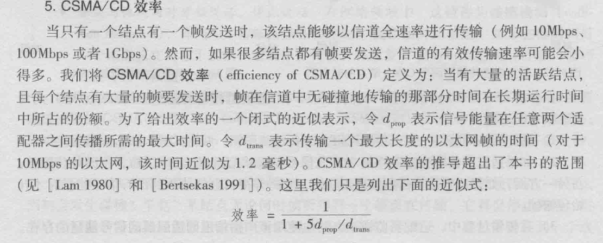
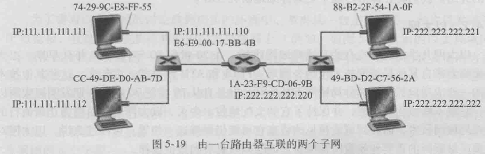
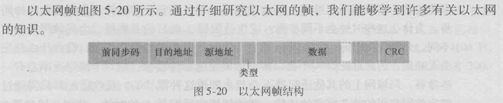
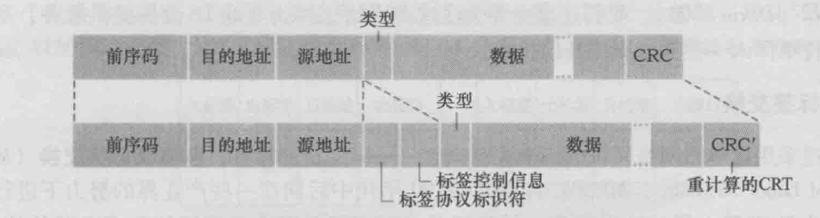
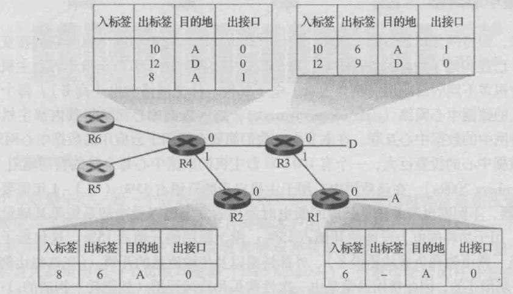
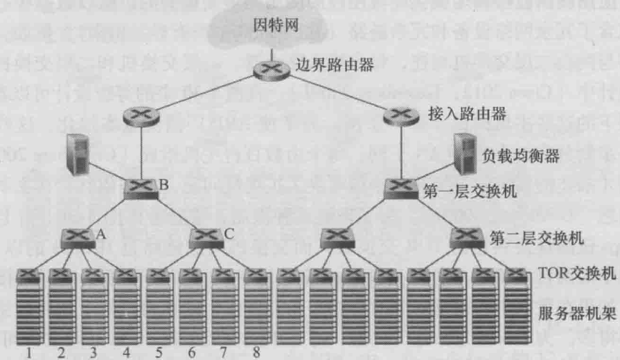
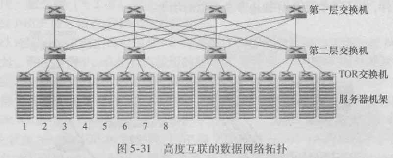

《计算机网络》第五章 链路层笔记
链路层概述
链路层提供的服务
任一链路层的基本服务都是将数据报通过单一通信链路从一个节点移动到相邻接点。不过其提供的服务细节随着链路层协议的不同而变化。
- 成帧：链路层帧
- 链路接入：媒体访问控制协议（Medium Access Control）规定了帧在链路上传输的规则.TODO
- 可靠交付（可选）
- 差错检测和纠正
链路层在哪里实现？

链路层是软件和硬件交接的地方。
差错检测和纠正技术

接收方的挑战是在：它只收到$D’$和$EDC’$的情况下，确定$D’$是否与初始的$D$相同.
差错检测和纠正技术使接收方有时但并总是检测出已经出现的比特差错,但还是可能会有未检出比特差错.
奇偶校验
- 单个奇偶校验位
- 二维奇偶校验TODO!
TODO:前向纠错的优点
检验和方法
因特网检验和(用于运输层)
循环冗余检测
CRC编码的关键思想:发送方和接收方需要协商长度$r+1$的比特$G$(即生成多项式).对于一个给定的数据段$D$
- 发送方要选择$r$个附加比特$R$,并将它们附加到D上,使得到的$d+r$比特用模2算术恰好能被$G$整除.
- 接收方用$G$去除接收到的$d+r$比特,如果余数为非零,就是出了差错,否则数据正确而被接受.
关键问题:发送方需要确定$R$,如何确定?
$$\displaystyle R = remainder \frac{D \cdot 2^r}{G}$$
注意都是模2算术
多路访问链路和协议
有两种链路: 点对点链路,广播链路
多路访问协议的两个理想特性
- 当只有一个节点活跃时,该活跃节点具有$R$ bps的吞吐量
- 当有$M$个节点活跃时每个活跃节点的吞吐量接近$R/M$ bps
对于广播链路,需要解决多路访问问题.
- 通过多路访问协议规范多个节点在共享的广播信道上的传输行为
- 碰撞问题的解决.
信道划分协议
- 时分多路复用(TDM)
- 时间帧,时隙
- 频分多路复用(FDM)
- 码分多址(CDMA)
随机接入协议
在随机接入协议中,一个传输节点总是以信道的全部速率(即$R$ bps)进行发送.当有碰撞时,设计碰撞的每个节点反复地重发它的帧,到该帧无碰撞为止.当一个节点经历一次碰撞时,它不必立即重发该帧,相反他再重发该帧之前等待一个随机时延.
时隙ALOHA
书P299-P300
下面放一些较关键的内容.
假设:
重点在于:节点是同步的,每个节点都知道时隙何时开始.
节点的行为
- 当节点有一个新帧需要发送时,它等到下一个时隙开始并在该时隙传输整个帧
- 如果没有碰撞,该节点成功地传输它的帧从而不需要考虑重传
- 如果有碰撞,会在时隙结束前检测到碰撞,并在后续的每个时隙中以概率$P$重传该帧,直到该帧无碰撞地传输出去.
效率的计算(注意思考推导过程)
对于有N个活跃节点的局域网中:
- 计算任意一个节点成功传送的概率:$p*(1-p)^{N-1}$
- 最大效率为:$Np*(1-p)^{N-1}$
- $N$取极限,最大效率为$\frac{1}{e}$,如何证明就完全是数学问题了.

纯ALOHA
与时隙ALOHA不同在于
非时隙的,完全分散不同步的
最大效率的计算
P301
载波侦听多路访问(CSMA)
和下面的放在一起了
具有碰撞检测的载波侦听多路访问(CSMA/CD)
特性
- 载波侦听:如果节点检测到信道有来自其他节点的帧正在传送,则等待一段时间在检测.
- 碰撞检测:节点在进行传输的时候仍然保持侦听,若检测到其他节点传输帧,则停止传输,等待随机时间量后再传输
- 等待随机时间量的确定:二进制指数后退
性能
信道传播时延:信号从一个节点传播到另一个节点所花费的时间
- 该传播时延越长,载波侦听节点不能真听到网络中另一个节点已经开始传输的机会就越大
CSMA/CD效率:当有大量的活跃节点,且每个节点都有大量的帧需要发送时,帧在信道中无碰撞地传输的那部分时间在长期运行时间中所占的份额.TODO:

轮流协议
- 轮询协议
- 主节点以循环的方式轮询每个结点,告诉每个结点可以传输的帧的最大数量
- 令牌传输协议
实例 DOCSIS
TODO:
交换局域网
链路层寻址和ARP
MAC地址
- 与局域网相连的每个接口都有一个唯一的MAC接口
- 适配器接收到一个帧时,将检查该帧的目的MAC地址是否与它自己的MAC地址匹配,如果匹配就提取数据包向上传递,如果不匹配就丢弃.
- 特例是MAC广播地址:48个连续的1组成的字符串
地址解析协议ARP
作用:网络层地址(如IP地址)与链路层地址(MAC地址)之间的转换
书P310
- 发送一个IP包的时候,需要将其封装成一个链路层帧,这时候就需要对方的MAC地址
- 获取MAC地址
- 在ARP表中有对应项的时候,直接从ARP表中取
- ARP表没有对应项的时候,发送方构造ARP分组并使用广播MAC地址封装成链路层帧广播之,等待一个响应ARP分组,从中取得并更新ARP表
需要注意的事情
- 查询ARP报文是在广播帧发送的,响应ARP报文是在一个标准帧中发送的
- ARP分组中具有的字段:
发送数据报到子网外
我觉得这个要自己学会分析.

以太网
- 以太网帧结构

- 以太网技术
链路层交换机
交换机自身对于子网中的主机和路由器是透明的.
- 交换机转发和过滤
- 借助于交换机表
当一台交换机安装配置好之后，其工作过程如下：
- 收到某网段（设为A）MAC地址为X的计算机发给MAC地址为Y的计算机的数据包。交换机从而记下了MAC地址X在网段A。这称为学习（learning）。
- 交换机还不知道MAC地址Y在哪个网段上，于是向除了A以外的所有网段转发该数据包。这称为泛洪（flooding）。
- MAC地址Y的计算机收到该数据包，向MAC地址X发出确认包。交换机收到该包后，从而记录下MAC地址Y所在的网段。
- 交换机向MAC地址X转发确认包。这称为转发（forwarding）。
- 交换机收到一个数据包，查表后发现该数据包的来源地址与目的地址属于同一网段。交换机将不处理该数据包。这称为过滤（filtering）。
- 交换机内部的MAC地址-网段查询表的每条记录采用时间戳记录最后一次访问的时间。早于某个阈值（用户可配置）的记录被清除。这称为老化（aging）。
https://zh.wikipedia.org/wiki/%E7%B6%B2%E8%B7%AF%E4%BA%A4%E6%8F%9B%E5%99%A8
虚拟局域网
认识到以太网帧中新添加的802.1Q标签的作用.

链路虚拟化
多协议标签交换MPLS:在基于分组交换的网络中实现的虚电路系统


数据中心网络
- 等级拓扑
- 
- 全连通拓扑
- 